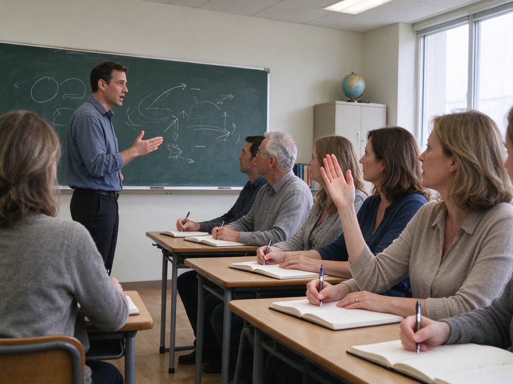

Liebe Eltern,
unsere Schule plant am 18. Dezember ein Weihnachtsfest in der Turnhalle. Die Kinder singen Lieder und führen ein Theaterstück auf, das sie seit Wochen üben. Wir bitten alle Familien, Kuchen oder Salate mitzubringen. Bitte tragen Sie sich in die Liste im Eingang ein, damit wir wissen, wie viel Essen wir erwarten können. Das Fest beginnt um 16 Uhr und endet gegen 18 Uhr. Der Unterricht endet an diesem Tag schon um 11 Uhr, damit die Kinder noch Zeit haben, sich vorzubereiten. Wir freuen uns auf einen schönen Nachmittag mit Ihnen.
Herzliche Grüße
Ihre Schulleitung
Die Audiodatei fehlt oder kann nicht geladen werden. Sie können „Hören beenden“ klicken und trotzdem die Aufgaben ansehen.
Aufgabe 1 · Ansagen am Telefon oder per LautsprecherSie hören jeden Text einmal. Zu jedem Text gibt es eine Aufgabe.
1
Wann findet der Kurs statt?
2
Was soll die Mutter tun?
3
Wann ist die Studienberatung wieder geöffnet?
4
Was ist morgen?
Aufgabe 2 · Ansagen im RadioSie hören jeden Text einmal.
5
Was bekommt man, wenn man ein Kinderbuch mitbringt?
6
Warum beginnt der Unterricht später?
7
Was bekommt man bei früher Anmeldung?
8
Worum geht es am Elternabend?
9
Bis wann kann man sich anmelden?
Aufgabe 3 · GesprächeZu jedem Gespräch lösen Sie zwei Aufgaben.
Gespräch 1 · Eine Mutter spricht mit einer Erzieherin.
10
Warum kann Tim in den Kindergarten kommen?
11
Die Mutter holt ihren Sohn um vier Uhr ab.
Gespräch 2 · Zwei Studenten sprechen über die Prüfung.
12
Wo lernen die beiden?
13
Der Mann hat schon alles gelernt.
Gespräch 3 · Ein Mann fragt im Büro der Volkshochschule.
14
Wie viel zahlt der Mann mit Ermäßigung?
15
Der Mann soll morgen einen Nachweis bringen.
Gespräch 4 · Eine Lehrerin und ein Vater sprechen.
16
Warum kommt der Sohn zu spät?
17
Der Vater will, dass der Sohn früher losgeht.
Aufgabe 4 · Meinungen: Lernen: Wie lernen die drei Personen Deutsch?Sie hören drei Personen.
Lernen: Wie lernen die drei Personen Deutsch?
Ordnen Sie die Aussagen den drei Personen zu. Nicht jede Aussage passt. Sie haben eine Minute Zeit zum Lesen.
- a Diese Person lernt auch im Auto oder im Bus.
- b Diese Person lernt nur mit Büchern.
- c Diese Person spricht gern mit anderen Menschen.
- d Diese Person lässt ihre Texte von einer Bekannten prüfen.
- e Diese Person lernt nur nachts.
- f Diese Person hat Angst, Fehler zu machen.
18
Person 1
19
Person 2
20
Person 3
Lesen
45 Min
25 Aufgaben. Die Zeit läuft erst, wenn Sie starten. Sie können auch zuerst Schreiben wählen (links).
Aufgabe 1 · Kataloge, Verzeichnisse, RubrikenLesen Sie das Verzeichnis. Wo finden Sie das? Wählen Sie die richtige Angabe.
Volkshochschule · Kursverzeichnis
Sie lesen das Kursverzeichnis der Volkshochschule. Wo finden Sie den Kurs?
| Sprachen | Spanisch für Anfänger · Englisch A2 · Französisch Konversation |
|---|---|
| Computer | Excel-Grundkurs · Fotos am Computer bearbeiten |
| Gesundheit und Bewegung | Yoga · Rückenfit · Nordic Walking |
| Kochen und Ernährung | Pasta und Pizza · Brot backen |
| Beruf und Bewerbung | Bewerbungstraining · Präsentieren |
1
Sie wollen Nordic Walking lernen.
2
Sie möchten mit Excel Tabellen erstellen.
3
Sie schreiben gerade Bewerbungen und möchten üben.
4
Sie möchten lernen, Brot zu backen.
5
Sie fahren im Sommer nach Spanien und wollen Spanisch lernen.
Aufgabe 2 · AnzeigenLesen Sie die Anzeigen und ordnen Sie zu.
Welche Anzeige passt zu welcher Situation? Eine Situation hat keine passende Anzeige: Wählen Sie dann x.
a Nachhilfe für Mathe, 8.–10. Klasse. Ich bin Lehramtsstudent und helfe bei Bruchrechnen, Gleichungen und Geometrie. Einzelunterricht bei Ihnen zu Hause oder bei mir, 15 € pro Stunde. Die erste Stunde ist gratis. Tel. 0160 112211
b Sprachkurs für Eltern mit Kinderbetreuung im Familienzentrum Süd. Der Deutschkurs findet montags und mittwochs von 9 bis 12 Uhr statt. Während des Kurses werden Ihre Kinder von zwei Erzieherinnen betreut. Die Anmeldung erfolgt im Büro des Familienzentrums, täglich von 8 bis 12 Uhr.
c Biete Hausaufgabenhilfe für Grundschüler, 10 € pro Stunde. Ich bin ehemalige Lehrerin und unterstütze Kinder der 1. bis 4. Klasse in Deutsch, Mathe und Sachkunde. Termine am Nachmittag nach Absprache, auch in kleinen Gruppen. Frau Lang, Tel. 0170 887766
d Abendschule: Hauptschulabschluss nachholen. Der Unterricht findet am Abend statt, damit Sie tagsüber arbeiten können. Beginn im Februar, Dauer ein Jahr. Eine persönliche Beratung ist dienstags von 16 bis 18 Uhr im Büro der Abendschule möglich. Die Teilnahme ist kostenlos.
e Schulbücher günstig! Gebrauchte Bücher für alle Klassen, von der Grundschule bis zum Abitur, bis zu 50 % billiger als neu. Wir kaufen auch Ihre alten Schulbücher an. Buchladen Lesezeit, Marktstraße 4, geöffnet Mo–Fr von 10 bis 18 Uhr.
f Kreativkurs für Kinder von 6 bis 10 Jahren: Malen und Basteln, jeden Samstag um 14 Uhr im Jugendhaus. Das Material ist im Preis enthalten, 5 € pro Termin. Wir basteln Laternen, Masken und Weihnachtsschmuck. Eine Anmeldung ist nicht nötig, kommen Sie einfach vorbei.
g Fahrschule Schnell: Führerschein in 6 Wochen! Die Theorie findet abends in kleinen Gruppen statt, die Fahrstunden vereinbaren Sie nach Termin mit Ihrem Fahrlehrer. Wir bieten auch Intensivkurse in den Ferien an. Das Anmeldeformular bekommen Sie im Büro oder online.
h Info-Tag der Universität: Lernen Sie unsere Studiengänge kennen! Am Samstag, von 9 bis 15 Uhr, stellen Professoren und Studenten ihre Fächer vor. Sie können Hörsäle und die Bibliothek besichtigen und Fragen zur Bewerbung stellen. Der Eintritt ist frei.
6
Sie haben kleine Kinder und möchten vormittags Deutsch lernen.
7
Sie möchten den Schulabschluss nachholen und arbeiten tagsüber.
8
Ihr Sohn braucht Hilfe bei den Hausaufgaben in der 3. Klasse.
9
Sie möchten gebrauchte Bücher für die 6. Klasse kaufen.
10
Sie suchen einen Chor, in dem Sie singen können.
Aufgabe 3 · Presse und formelle MitteilungenLesen Sie die Texte und lösen Sie die Aufgaben.
11
Was sollen die Familien mitbringen?
12
Am 18. Dezember dauert der Unterricht bis 16 Uhr.
Wer lernt, bleibt gesund?
Eine neue Studie zeigt: Menschen, die auch im Alter noch etwas Neues lernen, bleiben länger geistig fit. Die Forscher haben tausend Senioren über zehn Jahre begleitet und regelmäßig getestet. Wer regelmäßig einen Kurs besucht hat, zum Beispiel für Sprachen oder Computer, hatte seltener Gedächtnisprobleme. Besonders wichtig war, dass die Teilnehmer den Kurs mit anderen Menschen zusammen besucht haben. Ob es auch hilft, wenn man nur Rätsel löst, wurde nicht untersucht. Die Forscher möchten das in einer weiteren Studie prüfen. Für viele Menschen ist das Ergebnis eine gute Nachricht.
Eine neue Studie zeigt: Menschen, die auch im Alter noch etwas Neues lernen, bleiben länger geistig fit. Die Forscher haben tausend Senioren über zehn Jahre begleitet und regelmäßig getestet. Wer regelmäßig einen Kurs besucht hat, zum Beispiel für Sprachen oder Computer, hatte seltener Gedächtnisprobleme. Besonders wichtig war, dass die Teilnehmer den Kurs mit anderen Menschen zusammen besucht haben. Ob es auch hilft, wenn man nur Rätsel löst, wurde nicht untersucht. Die Forscher möchten das in einer weiteren Studie prüfen. Für viele Menschen ist das Ergebnis eine gute Nachricht.
13
Was hat die Studie untersucht?
14
Die Forscher haben Rätsel im Alter untersucht.
Betreff: Ihre Anmeldung zum Integrationskurs
Sehr geehrte Frau Nguyen,
vielen Dank, Ihre Anmeldung ist eingegangen. Der Kurs beginnt am 8. Februar und dauert sechs Monate. Der Unterricht findet montags bis freitags am Vormittag statt. Bitte kommen Sie am ersten Tag um 8.45 Uhr in Raum 12. Bringen Sie Ihren Ausweis und die Bescheinigung vom BAMF mit. Die Kursgebühr überweisen Sie bitte bis zum 25. Januar. Die Bankverbindung finden Sie im Anhang dieser E-Mail. Bei Fragen erreichen Sie unser Sekretariat telefonisch von 9 bis 12 Uhr.
Mit freundlichen Grüßen
Sprachschule Brücke
Sehr geehrte Frau Nguyen,
vielen Dank, Ihre Anmeldung ist eingegangen. Der Kurs beginnt am 8. Februar und dauert sechs Monate. Der Unterricht findet montags bis freitags am Vormittag statt. Bitte kommen Sie am ersten Tag um 8.45 Uhr in Raum 12. Bringen Sie Ihren Ausweis und die Bescheinigung vom BAMF mit. Die Kursgebühr überweisen Sie bitte bis zum 25. Januar. Die Bankverbindung finden Sie im Anhang dieser E-Mail. Bei Fragen erreichen Sie unser Sekretariat telefonisch von 9 bis 12 Uhr.
Mit freundlichen Grüßen
Sprachschule Brücke
15
Was muss Frau Nguyen bis zum 25. Januar tun?
16
Frau Nguyen soll die Bescheinigung vom BAMF zum ersten Tag mitbringen.
Aufgabe 4 · InformationsbroschüreSind die Aussagen richtig oder falsch?
Hinweise zur Nutzung der Bibliothek
Mit dem Bibliotheksausweis können Sie bis zu zehn Medien gleichzeitig ausleihen. Bücher und Zeitschriften dürfen vier Wochen behalten werden, DVDs nur eine Woche. Die Leihfrist kann zweimal online verlängert werden, wenn niemand das Medium vorbestellt hat. Wer ein Medium zu spät zurückgibt, zahlt pro Tag und Medium 20 Cent. Der Ausweis kostet für Erwachsene 15 Euro pro Jahr, für Kinder unter 14 Jahren ist er kostenlos. Zeitungen und neue Zeitschriften können Sie nur im Lesesaal lesen. Der Lesesaal ist täglich bis 20 Uhr geöffnet, dort gibt es auch kostenloses WLAN.
Mit dem Bibliotheksausweis können Sie bis zu zehn Medien gleichzeitig ausleihen. Bücher und Zeitschriften dürfen vier Wochen behalten werden, DVDs nur eine Woche. Die Leihfrist kann zweimal online verlängert werden, wenn niemand das Medium vorbestellt hat. Wer ein Medium zu spät zurückgibt, zahlt pro Tag und Medium 20 Cent. Der Ausweis kostet für Erwachsene 15 Euro pro Jahr, für Kinder unter 14 Jahren ist er kostenlos. Zeitungen und neue Zeitschriften können Sie nur im Lesesaal lesen. Der Lesesaal ist täglich bis 20 Uhr geöffnet, dort gibt es auch kostenloses WLAN.
17
DVDs darf man vier Wochen behalten.
18
Kinder unter 14 Jahren bekommen den Ausweis gratis.
19
Die Leihfrist kann man beliebig oft verlängern.
Aufgabe 5 · Brief ergänzen (Sprachbausteine)Welches Wort passt? Lösen Sie die Aufgaben 20 bis 25.
Liebe Frau Schmid,
ich schreibe Ihnen, (20) ich nächste Woche nicht zum Kurs kommen kann. Es tut mir sehr leid, denn ich habe bisher keinen Unterrichtstag verpasst. Ich hoffe, dass das für Sie kein Problem ist. Ich muss (21) Arzt gehen und danach noch einen Termin (22) dem Amt wahrnehmen. Können Sie mir bitte (23), was wir in dieser Woche gemacht haben? Ich möchte die Aufgaben (24) zu Hause machen. Wenn Sie möchten, bringe ich sie Ihnen am Montag zur Kontrolle mit. Vielen Dank (25) Ihre Hilfe.
Mit freundlichen Grüßen
Pedro Alves
ich schreibe Ihnen, (20) ich nächste Woche nicht zum Kurs kommen kann. Es tut mir sehr leid, denn ich habe bisher keinen Unterrichtstag verpasst. Ich hoffe, dass das für Sie kein Problem ist. Ich muss (21) Arzt gehen und danach noch einen Termin (22) dem Amt wahrnehmen. Können Sie mir bitte (23), was wir in dieser Woche gemacht haben? Ich möchte die Aufgaben (24) zu Hause machen. Wenn Sie möchten, bringe ich sie Ihnen am Montag zur Kontrolle mit. Vielen Dank (25) Ihre Hilfe.
Mit freundlichen Grüßen
Pedro Alves
20
Lücke (20)
21
Lücke (21)
22
Lücke (22)
23
Lücke (23)
24
Lücke (24)
25
Lücke (25)
Schreiben
30 Min
Ein Brief, Aufgabe A oder B. Die Zeit läuft erst, wenn Sie starten. Sie können auch zuerst Lesen wählen (links).
Schreiben30 Minuten · ein Brief
Wählen Sie Aufgabe A oder B. Schreiben Sie ca. 80–100 Wörter, behandeln Sie alle vier Punkte, und vergessen Sie Anrede und Gruß nicht.
Sie haben letzte Woche den Deutschkurs verpasst, weil Sie krank waren. Schreiben Sie an Ihre Lehrerin, Frau Schmid.
Schreiben Sie auf alle vier Punkte:
- Grund für Ihr Schreiben
- Entschuldigung
- Frage zu den Hausaufgaben
- Wann kommen Sie wieder?
Ein Kurs, den Sie bezahlt haben, ist ausgefallen. Schreiben Sie an die Volkshochschule (formell).
Schreiben Sie auf alle vier Punkte:
- Was haben Sie gebucht?
- Was ist passiert?
- Was möchten Sie (Geld zurück / Ersatztermin)?
- Bis wann erwarten Sie eine Antwort?
0 Wörter
SprechenPaarprüfung · ca. 15 Minuten
Teil 1 · Sich vorstellen
Sie stellen sich vor (ca. 1 Minute). Danach folgen ein bis zwei Fragen.
- Name
- Geburtsort
- Wohnort
- Arbeit / Beruf
- Familie
- Sprachen
Mögliche Nachfragen: Warum lernen Sie Deutsch? · Wie lernen Sie am besten? · Wie lange sind Sie schon in Deutschland?
Teil 2 · Von Erfahrungen berichten
Teilnehmer A · Bild A'+this.alt+'
'">- Was sehen Sie auf dem Foto?
- Wie war Ihr erster Deutschkurs?
- Wie lernt man in Ihrem Heimatland Sprachen?
Teilnehmer B · Bild B
'">
'+this.alt+'- Beschreiben Sie das Foto.
- Wie lernen Sie am liebsten Deutsch?
- Was ist ein guter Lehrer oder eine gute Lehrerin?
Teil 3 · Gemeinsam etwas planen
Sie möchten mit Ihrer Lerngruppe vor der Prüfung gemeinsam lernen. Planen Sie die Treffen.
- Wann treffen Sie sich?
- Wo lernen Sie?
- Was lernen Sie?
- Wer bringt was mit?
- Wie oft?
Sprechen Sie laut, am besten mit Aufnahme. Schreiben Sie danach Ihre Antworten hier auf. Die Bewertung machen wir im Claude-Chat.